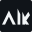

Symbol · aik-symbol.svg
Symbol · aik-symbol-reverse.svg
Horizontal lockup · aik-lockup-horizontal.svg
Horizontal lockup · aik-lockup-horizontal-reverse.svg
Stacked lockup · aik-lockup-stacked.svg
Stacked lockup · aik-lockup-stacked-reverse.svg

Simplified favicon symbol · aik-favicon-symbol.svg / aik-favicon.svg (tile)
Simplified favicon symbol · aik-favicon-symbol-reverse.svg / aik-favicon.svg (tile)